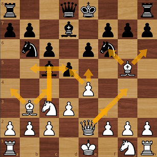
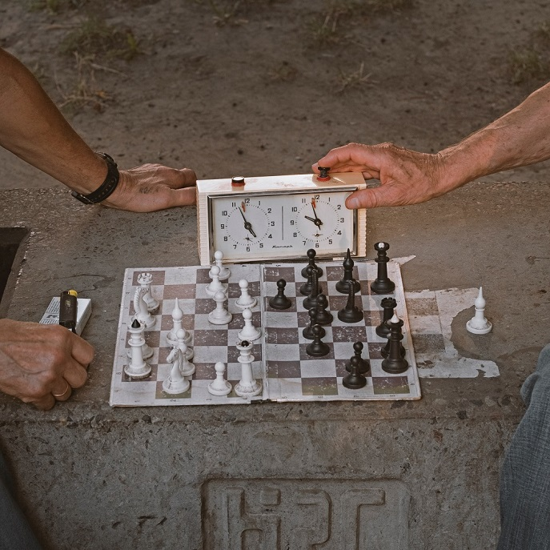

Det finns inte ett enda drag i schack som din motståndare kan göra som du inte själv kan se. Innan du rör måste du titta på brädet för att se inte bara vad du kan ta men öven vad din motståndare kan ta. Sedan måste du titta på vad du ska göra om de tar och planera för de självklara dragen
Varje pjäs har sitt eget värde. Det är ganska självklart att damen är bättre än tornet då den är objektivt bättre. Bönder är värda ett poäng men när de börjar nå sista raden går värdet upp snabbt. Springare och löpare ges tre poäng var men löpare brukar typiskt sätt vara föredragna. Torn är 5 poäng och damer är 9 poäng. Kungen har inget poäng men bestämmer vinst eller förlust och är därmed viktigast
I schack måste du använda den tid du har. Om du inte har en timmer ta så lång tid som du behöver. Om du har en timer så bli inte mer stressad än du behöver. Om du inte förstår skillnaderna mellan olika drag så gör ditt drag då om du inte förstår skillnader kan du inte bestämma vilket oavsett hur mycket tid du spenderar
Dina pjäser ska arbeta ihop. Bilden visar en obrytbar formation. Den som försöker kommer tillslut att förlora. Anledningen till att detta fungerar är att alla bönder på båda sidorna samarbetar för att hålla undan motståndarens pjäser